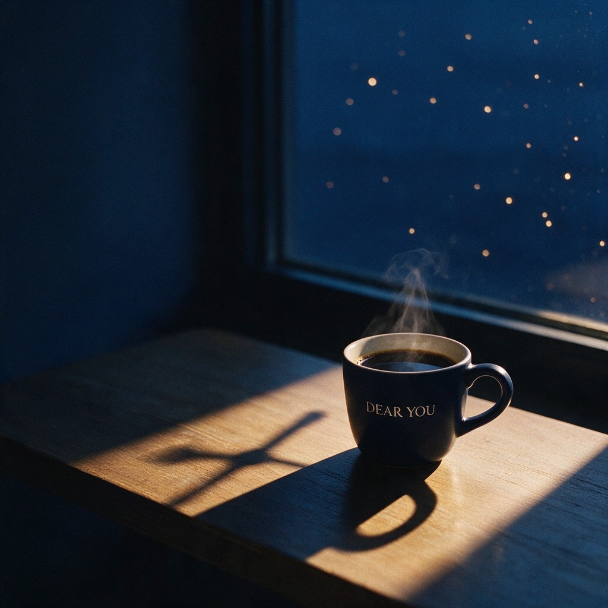
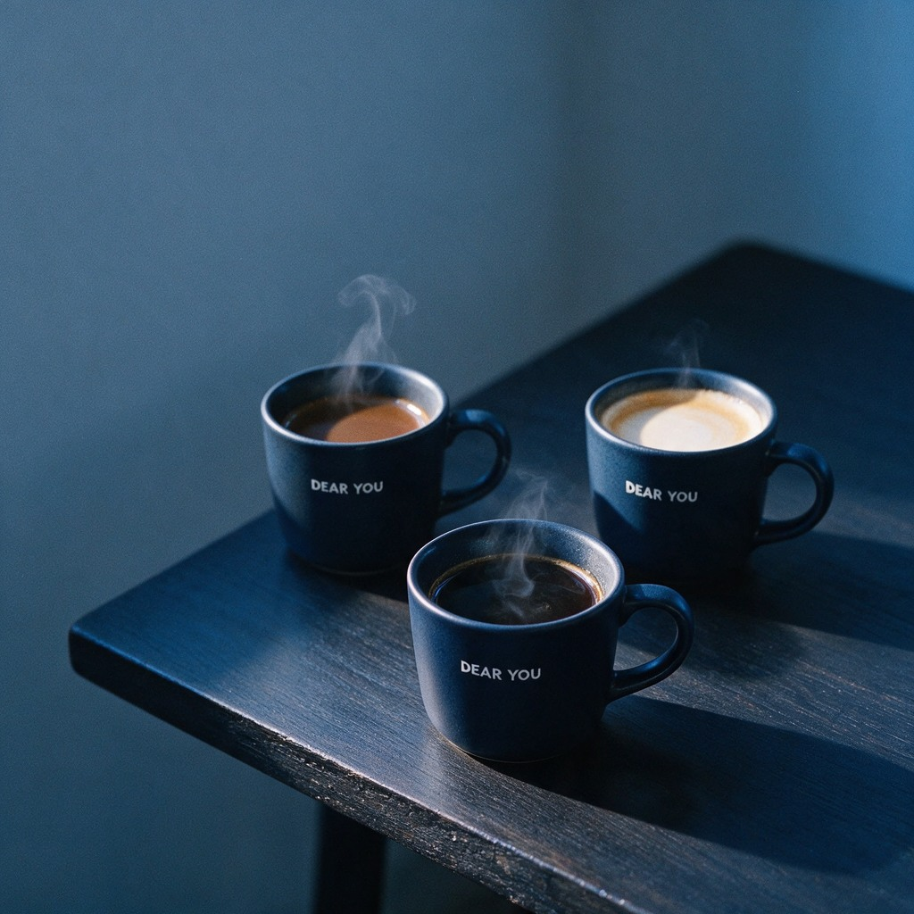
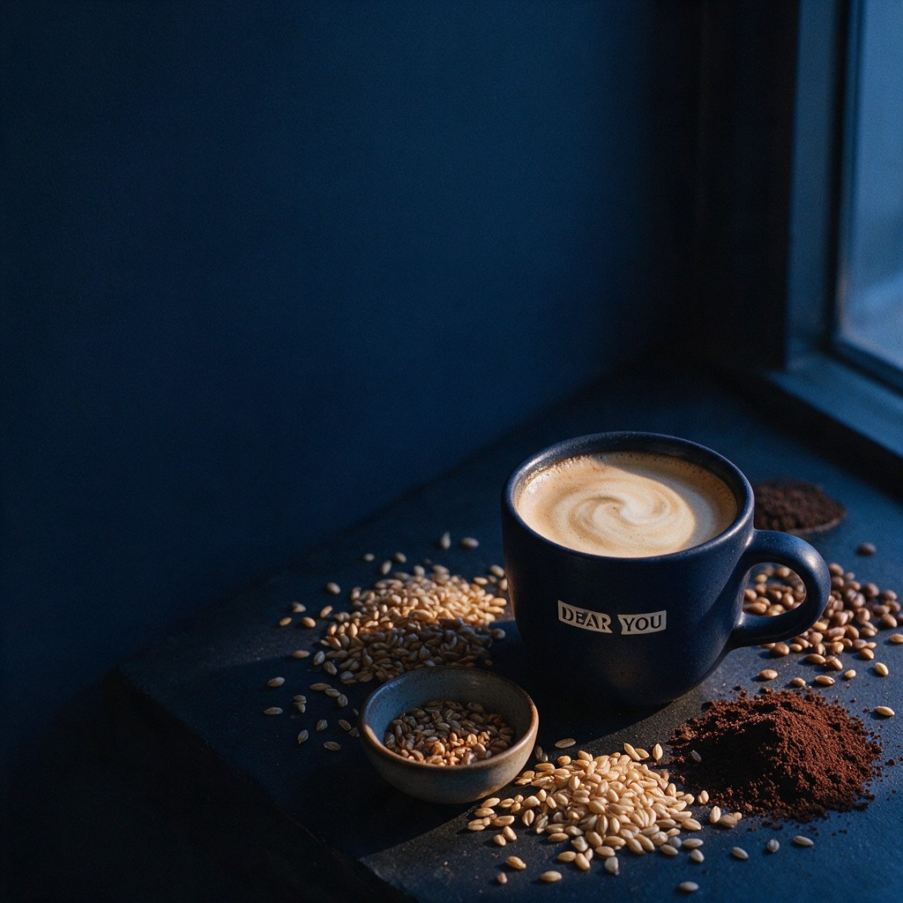
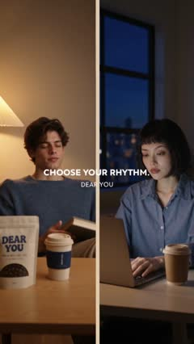
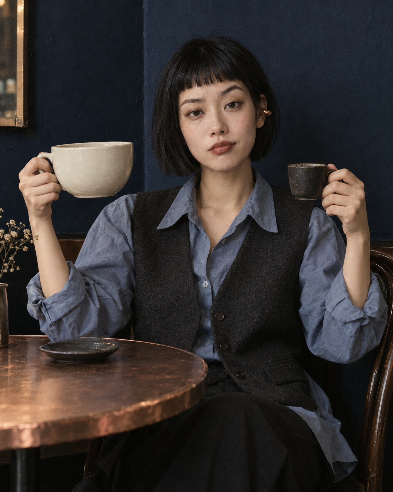

오후를 조금 느슨하게.
계속되던 할 일 사이, 좋아하는 맛을 고르는 짧은 휴식.
오후 세 시의 커피도, 퇴근 후의 한 잔도.
오늘의 나에게 맞는 선택으로
좋아하는 시간을 이어가세요.

DEAR YOU, FOR YOUR EVENING.커피 향이 반가운 오후. 친구와 조금 더 이야기하고 싶은 저녁.
카페인을 줄이고 싶은 날에도, 그 시간은 계속되길.
DEAR YOU는 서로 다른 선택이 함께하는 커피하우스를 준비합니다.
익숙한 커피부터 새로운 로스티드 풍미까지.
세 가지 선택을 천천히 살펴보세요.


커피 맛은 즐기고 싶고, 카페인은 줄이고 싶은 날.
카페인 제거 공정을 거친 원두로 만든 디카페인 커피를 만나보세요.
디카페인에도 카페인이 남아 있을 수 있습니다. 구체적인 함량은 제품 정보가 확정되면 안내할 예정입니다.
좋아하는 맛도, 쉬어가는 방법도 각자의 것으로.
오늘의 한 잔은 어떤 장면에 놓일까요?
계속되던 할 일 사이, 좋아하는 맛을 고르는 짧은 휴식.
일을 마친 저녁에도 이어가고 싶은 한 잔의 시간.
나는 디카페인, 너는 늘 마시던 커피. 같은 테이블에서.
AI 생성 브랜드 콘셉트 이미지입니다. 실제 메뉴와 원재료는 개발 후 안내합니다.

누군가는 늘 마시던 커피를,
누군가는 디카페인을,
누군가는 원두 없는 새로운 맛을.
같은 메뉴를 고르지 않아도 함께 즐길 수 있도록.
DEAR YOU는 한 잔의 선택을 넓히고,
함께 보내는 시간을 소중히 생각합니다.
세 가지 질문에 답해보세요.
오늘의 리듬을 담은
나만의 취향 카드가 완성돼요.

이름도, 연락처도 필요 없어요.
현재 개발 중인 음료의 방향을 제안합니다.
디카페인은 카페인 제거 공정을 거친 커피 원두를 사용합니다. 원두 없는 로스티드 음료는 커피 원두 대신 다른 원료를 볶고 블렌딩해 풍미를 만드는 음료로 기획하고 있습니다. 최종 원료와 메뉴는 개발 후 안내할 예정입니다.
커피 원두의 맛을 이어가고 싶다면 디카페인부터 살펴보세요. 다른 로스티드 풍미가 궁금하다면 원두 없는 음료도 선택지가 될 수 있습니다. 카페인 함량과 원재료 정보를 함께 확인해 자신에게 맞는 한 잔을 골라주세요.
DEAR YOU는 현재 브랜드와 메뉴를 준비하고 있습니다. 판매 메뉴, 가격, 매장 위치와 오픈 일정은 아직 확정되지 않았습니다. 이 페이지의 이미지는 브랜드 콘셉트 이미지입니다.
오늘의 컨디션도, 오래 좋아한 취향도 함께 생각해요.
나의 한 잔 카드 만들기 ↑